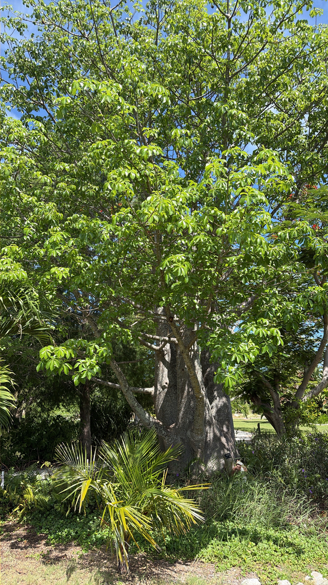

- The African Baobab can live for over a thousand years and store tens of thousands of gallons of water in its massive trunk — making it a literal life-support system for wildlife during dry seasons.
- Elephants have been known to tear into the trunks for moisture.
- The fruit, called monkey bread, has more vitamin C than an orange and more calcium than milk.
- For many African communities, a single ancient Baobab is as central to village life as a town square.
Native to the dry, hot savannas of sub-Saharan Africa, where it dominates the landscape and can reveal the presence of a watercourse from great distances. Also native to the southern Arabian Peninsula.
The genus name Adansonia honors Michel Adanson (1727–1806), French botanist and naturalist who studied the species in Senegal. The common name baobab comes from the Medieval Latin bahobab, most likely originating from a central African language. In South Florida, baobabs grow well and make dramatic landscape trees — the warm, dry winters suit them better than the wet tropics.
- Radiocarbon dating has confirmed individual Baobabs exceeding 1,000 years in age — some of the oldest living organisms on the African continent. The oldest confirmed specimen was dated to approximately 1,275 years old.
- The trunk stores vast quantities of water in spongy tissue — making it a target for thirsty elephants that sometimes tear the bark open to drink during drought. A single mature trunk can hold tens of thousands of liters.
- It belongs to the same subfamily as the Silk Floss Tree and Kapok Tree, both also growing at this park — three members of the Bombacoideae with some of the most extraordinary trunk architectures in the plant kingdom all in one collection.
- In African tradition, the Baobab is called the Tree of Life — providing food, water, shelter, and medicine to both people and animals for millennia. Hollow trunks of ancient specimens have served as shelters, bars, prisons, and even bus stops.
- Baobab fruit pulp contains roughly six times more vitamin C than oranges by weight, more calcium than milk, and significant iron and potassium. It is being studied as a commercial superfood and is already used in energy drinks and nutritional products worldwide.
In its African homeland, a single ancient Baobab is its own ecosystem — giant white flowers pollinated by fruit bats and bush babies, fruit eaten by monkeys, baboons, and birds, bark chewed by elephants for moisture, and hollow trunks sheltering everything from owls to bee colonies.
In Florida, the tree's ecological role is more modest but still real: its large night-blooming flowers attract large moths and bats, its fruit and bark interest squirrels and birds, and the broad canopy provides shade and roosting structure. Even at young ages, the Baobab connects visitors to one of Earth's most ecologically storied trees.
By seed. Seeds have a hard coat requiring soaking before germination. Growth is slow, determined by groundwater and rainfall. Deciduous — leafless for much of the year.
Large, pendulous, heavy white flowers with a very large number of purple stamens, blooming in mid-winter. Open at night — pollinated by fruit bats, bush babies, and large moths.
Large egg-shaped woody capsules filled with powdery dry pulp surrounding hard seeds — the edible monkey bread. Capsules can be 12 inches long.
The defining feature — massively swollen bottle-shaped trunk, smooth grayish-pink bark. Can reach 30 feet in diameter in ancient specimens.
Palmate compound leaves with 5–9 leaflets, appearing only during the brief growing season. The tree is leafless for the majority of the year.
The smooth, swollen, bottle-shaped trunk is unmistakable at any size. Young specimens already show the characteristic trunk taper. Watch for the dramatic winter flowers — large white and purple, opening at dusk.
The leaves, fruit pulp, flowers, and seeds are all edible and nutritious — the pulp is exceptionally rich in vitamin C, calcium, and potassium.
It's one of the most completely edible trees in the world, with no known toxicity to people or pets.
NOMENCLATURE: Baobab was historically placed in Bombacaceae; that family is now folded into Malvaceae as subfamily Bombacoideae.


- © Ruby Meador (CC-BY-NC), via iNaturalist
- © Randall Carter (CC-BY-NC), via iNaturalist